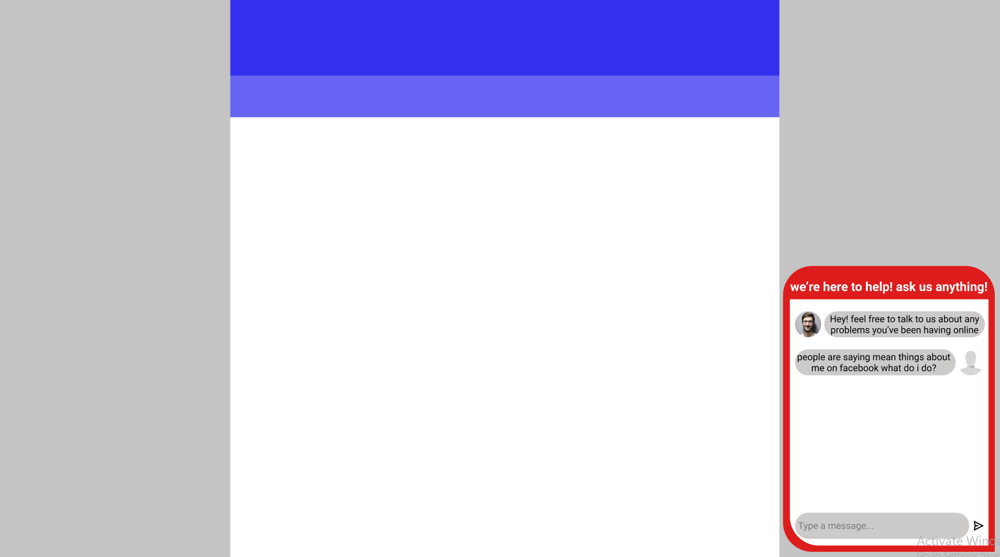

The Anonymous Message Box is intended to provide kids struggling with online safety issues or cyberbullying with an avenue to seek support and solutions. This will be achieved through implementing a message box that lets them text support staff. The support staff member will aim to respond to the user as soon as possible providing constructive advice and suggestions. The support staff member and the user will continue to converse anonymously through the message box until a resolution is reached or the user is satisfied and leaves the chat.
Alex is a 14 year old who is facing online harassment on Facebook. He has received hurtful comments on his posts mocking his appearance from students in his primary school. This has been going on for some time now however, Alex is new to social media and isn't aware of what he can do to deal with this issue. He feels too embarrassed to bring this up to his teachers or his parents but still wants to confide and seek help without revealing his identity. Alex then comes across the safeme.com website and discovers the “Anonymous Message Box” feature. He begins chatting to a helper anonymously and describing his situation and, in turn, the helper offers Alex recommendations on what he can do to resolve the issue.
view full mock up for this feature here
